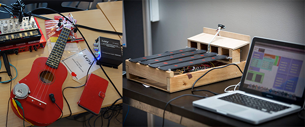
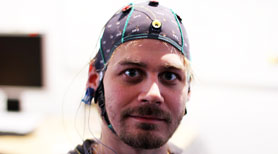
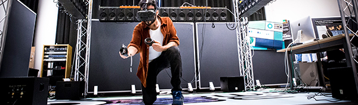
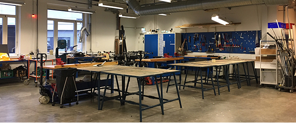
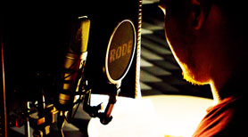
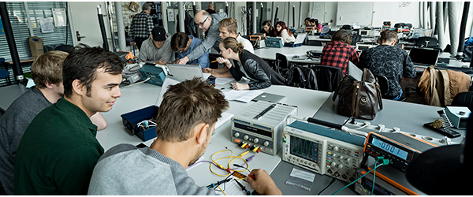

The Augmented Performance Lab (APL) at Aalborg University Copenhagen investigates performative aspects of interaction design. Researchers at APL disseminate on interactive technologies for music performance and production, especially focusing on New Interfaces for Musical Expression (NIME) and Sonic and Embodied Interaction (SEI). The Augmented Performance Lab is linked directly to the Sound and Music Computing (SMC) graduate education. As control and expressiveness in performance are related to perceived emotion and meaning, a primary focus is to enhance gestural control of live performance methods using new instruments and interfaces.
The laboratory consists of three areas - Making, Moving & Hearing, which investigate technological, cultural and artistic projects with both national and international partners. APL's technical equipment captures, analyzes, processes and displays real-time human performances with augmented / hybrid musical instruments, tangible interfaces, reactive surfaces, and 3D spatial interaction.
Go to the lab's website
Facilities
Augmented Performance lab
Augmented Cognition Lab

The Augmented Cognition Lab is dedicated to the study of perception, cognition, affective states and aesthetic experience in digital and multimodal media and cognitive technologies. It is well equipped technologically and methodologically to investigate such processes when experiencing and interacting with complex stimuli and narrative content provided through immersive and representational interactive displays. The lab is directed by associate professors Luis Emilio Bruni and Sofia Dahl.
The lab offers state of the art equipment for measuring brain activity (electroencephalography – EEG) and several psychophysiological measurements devices and methods such as muscle activity (EMG), eye-tracking devices, heart and pulse rate measurements, computer vision and thermal imaging technology for recognition of affective states, including also a complete BCI research system, g.USBamp (CE-certified, FDA listed) with 32 channels with hardware and software for motor imagery/ERD, SSVEP-BCI and P300 ERP/BCI.
Multi-Sensory Experience Lab

In the Multisensory Experience Lab we work on virtual reality and multisensory experiences, exploring the combination of different input and output modalities in interactive applications. We are interested in both development of novel hardware and software technologies as well as evaluation of user experience. We apply our technologies to health, rehabilitation, training, learning and entertainment.
We are particularly interested in researching topics related to sonic interaction design for multimodal environments, simulating walking experiences, sound rendering and spatialization, haptic interfaces, cinematic VR and evaluation of user experience in multimodal environments.
go to the lab's website
V-lab

V-Lab is AAU CPH's combined student- and prototyping-workshop. Here you can get help to design and build physical models (scale models and fullscale models) for student projects. You can work with wood, cardboard, metal, plastic, foam and similar materials.
To get access to the workshop, you need to first participate in Barbara Samuelsen’s mandatory safety lecture (3 hours), which is given at the beginning of each semester. You also need to participate in a workshop instruction held by the staff in the workshop (Lotte, Jonas and Tim).
Sound Recording (Foley)/Graphics Lab
This lab is divided into two main functions. First of all there is a recording system up and running for making high quality audio recordings. A computer (Mac) with Reason, Garageband and Audacity is available together with an M-Audio sound card. Three high quality microphones are available (one condensator mic for vocals, one directional mic for Foley recordings, and one stereo mic for environment recordings). Everything is setup ready to go at all times.
In the opposite side of the lab two machines are setup especially for rendering/Unity tasks (one is an iMac running Unity, Maya, and other software – the other is a Windows powerhouse running Matlab at the moment). This part of the lab can also be used for conducting user experiments that are mostly desktop based (for instance play a computer game and fill in a questionnaire).
go to the lab's websiteE-lab

E-Lab is set up for basic electronics. Students can work with a wide variety of sensors, audio, lighting and programmable devices such as Arduino, Teensy, Raspberry Pi etc. In addition to courses and workshops, the lab is available to carrying out their project work. E-Lab is part of the Department of Architecture, Design and Media Technology, but is used for courses belonging to other departments such as Department of Planning and Center for Communication, Media and Information Technology.
Students from any degree programme at AAU CPH can use the electronics laboratory provided they have attended Barbara Samuelsen’s safety course, available at the start of each semester, and E-lab’s own introduction course in the use of lab instruments, soldering and components. The Introduction to E-lab is part of the existing semester coursework for some degree programmes and certain workshops. As of the autumn semester of 2018, it will be available as a stand-alone course.